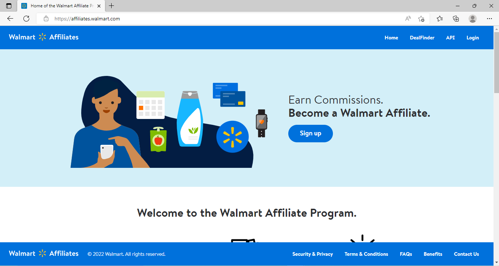
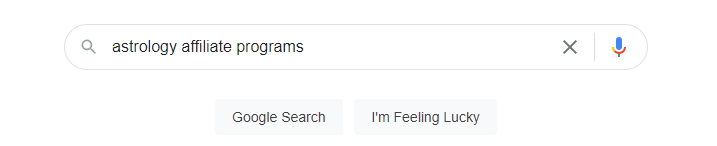
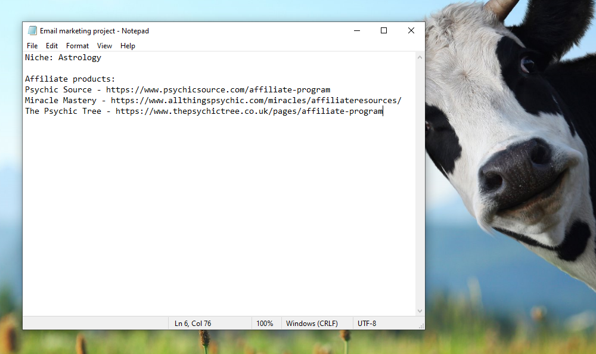
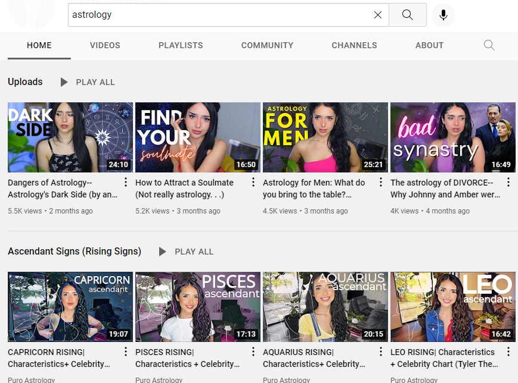

Introduction
In this tutorial, I'm going to teach you exactly how to create a stream of recurring income using online marketing.
Exactly how much money you make is dependant on a number of factors, but countless people have already used the exact blueprint I am about to give you to make thousands, tens-of thousands, and even hundreds of thousands a month.
If this sounds unbelievable then please continue reading, because I am not only going to give you up-to-date stats and statistics detailing how this is not only possible, but happening right now...
...I am also going to teach you exactly how to do it in a simple, step-by-step, paint-by -numbers way, so that even a complete noob to online marketing can easily understand and implement the steps themselves.
Sound good? Alright, lets begin.
So online marketing is a broad topic, containing countless topics and sub-topics. The topic we are going to be focusing on today is
email marketing.
Email marketing is one of the most profitable niches of online marketing, and has been for years.
The basic idea is that you acquire a list of interested people's email addresses, and then send them emails containing relevant information to their interests and links to products that they might be interested in buying.
Every time they purchase a product through one of those links, you make a commission.
How Email Marketing Works

Drive traffic to your landing page
Monetize your List by promoting Relevant Products
Offer a Free Gift & Collect Email Addresses
Follow-up with Prospects & Build Relationship
If that sounds spammy, don't worry! Practically every single major company is involved in email marketing (although most do it rather poorly), and it is a completely legitimate and legal way to make money, when done correctly. This guide is going to put a strong focus on
correct implementation.
Before we begin with the actual guide, here is a list of things you need to make it work:
1. Computer with internet
2. A willingness to learn new things
3. Between $50-$75 to purchase some necessary software/tools.
Here is a diagram of what we will be creating:
<-diagram>
Good luck and thanks for taking the time to read this guide.
CHAPTER 1 - Choose a niche
I mentioned before that we will be promoting products with email marketing. The products you will be promoting are what we call
affiliate products.
Affiliate products are products from other companies and brands.
<-affiliate marketing image>
Every time you sell one of these products you will earn a percent of the sale.
It's super-easy to start selling another companies products as an affiliate; most companies have links to their affiliate products right on their homepages, where you can sign up and immediately start promoting their products as an affiliate.
For example, if you go to Walmart.com, you can see they have their affiliate sign-up link right here:

Once you sign up through that affiliate page, you will be able to promote Walmart products and earn a commision of every sale you make.
So now that you understand what affiliate products are, its time to choose what type, or niche, of product you would like to sell.
For instance, if you wanted to sell hiking boots and hiking gear, your niche would be
hiking equipment.
My advice when picking a niche would be to pick an area of interest or passion. That way, you will enjoy your work, and probably make more money.
So if you were into astrology, you could choose that as your niche. And then you would promote birth chart reading products, telescopes etc.
But we'll focus on choosing the product in the next step. For now, you will simple be picking your niche.
Other examples of niches include:
Bikes
Football
Sci-Fi fiction novels
For this guide, we'll be using the
astrology niche, just as an example.
How long you should take coming up with your niche is very difficult to estimate. It could come to you in a flash or it might take more thought and perhaps research.
You'd be hard-pressed to find a niche that this guide won't work in though. So my advice would be to pick an area that you have a passion for and then save it in a notepad document with the name "email-marketing-project".

CHAPTER 2 - Choose a product
Now that you have your niche, it's time to choose the products you will be promoting. This step is very easy...
All you need to do is go to google and type in your niche name followed by "affiliate programs":

Just click through each individual product and check the affiliate information.

The key things I usually look out for are:
1. How much you will earn per sale
This is called the commision rate, and it will be listed on the product's affiliate sign-up page. I usually try to get a good balance between how much I'll earn per sale, and how hard I think it will be hard to sell. Which brings us to the next point.
2. How well the product is already selling
This step is very important. You want to make sure you choose a product that is likely to sell. Luckily, most affiliate products sold by reputable brands have gone throug extensive testing and optimization to make sure that their product coverts customers. And you can usually find a list of the stats to back this up on their affiliate page. As long as you stay away from obviously scammy products, unknown brands, and products that don't have their selling stats listed on their affiliate pages, you should be fine.
3. If the product has recurring (monthly) commisions
Recurring commisions are a huge part of what makes email marketing so profitable. With products that offer recurring commisions (like subscription services) you can earn money on autopilot, with monthly commision payments.
How Recurring Commissions Work
PROSPECT CLICKS ON YOUR REFERRAL LINK
PROSPECT BUYS MONTHLY PRODUCT
YOU GET A COMMISSION PAYMENT EVERY MONTH
I try to prioritize recurring products when I can, for obvious reasons, but they are relatively rare (unfortunaltely).
Once you have a list of 2-3 products that fit the above criteria, save them in your notepad file like so:

CHAPTER 3 - Create free resource
Hopefully the first two steps were pretty easy. This step is also fairly simple (and perhaps even fun!), but it is the most time-consuming step (1-3 hours est.)
Here you will be creating a free resource, typically an eBook, containing information about your niche. You can get creative here and write about something you are genuinely interested in.
But the key is to make sure that it is something that the people who are interested in your niche would be VERY interested in.
For example, since my niche for this guide is astrology, I could do things like:
How To Find Your Destiny In Your Birthchart
How To Read Your Birthchart Using A Mayan Calendar
Once in 299383 year star alignment means your Ex might give you a call...
These are all things that are very intiguing to people interested in astrology. They would have no problem downloading a free ebook (as long as they knew it was safe!) talking about those topics.
When coming up with the topic of your free resource, a good practice is to ask two questions:
1. How does the reader benefit from this?
2. Is that benefit great enough to warrant downloading your free resource?
If the answer to question 2 is yes, then it's typically worth creating a free resource for that topic.
If you're struggling to come up with topic ideas, what I usually do is browse through blogs and youtube channels in your niche.

There you will find a whole host of topics pertaining to your niche that you can draw inspiration from and expand on in your free resource.
You also want to make sure that your free resource is pretty, and looks professional. No one wants to read a crappy PDF file written in 12 point TImes Roman in 2022. You want to write and design a professional, interesting, eye-catching eBook. To do this, there are basically 2 options that you can go with.
You can write it yourself and design it yourself using software like Adobe Photoshop or Gimp. Here is a great article which goes over how to do this:
You can pay someone else to write and design it for you, using a service online. Some of the services I would recomment going with for this would be ----.
Once you have your free resource ready, usually as a PDF file, you are ready to move on to the next step.
CHAPTER 4 - Create landing page
Ok, so now you have your free resource, it's time to build a Landing Page for it.
A landing page is basically just a very simple, one-page website that displays your free resource, and allows people to download it for free by entering their email address.
How to blah blah blah...
Get instant access to all the amazing benefits.
YOUR FREE RESOURCE (eBook)
Bullet Points
Bullet Number 1
ipsom ejwg jweg wgnjkw wegnowg iwjgnw gwnegw
Bullet Number 2
ipsom ejwg jweg wgnjkw wegnowg iwjgnw gwnegw
Bullet Number 3
ipsom ejwg jweg wgnjkw wegnowg iwjgnw gwnegw
As you can see, a landing page is a very simple site, containing basically 4 elements:
1. A Title
2. A nice picture of your free resource
3. Some bullet points about your free resource and what makes it useful
4. An input field for visitors to enter their email and download the free resource.
Remember, this is a guide on how to make money using email marketing.
Your goal is to acquire a list of interested people's email address so that you can then engage with them and promote your products. Your landing page will be where you acquire this list of emails.
Every time someone downloads your free resource, you will get their email address (you'll learn how to store these emails and promote to them in a later step).
So how do you create a landing page. Well technically there are countless ways to do it. You could create one yourself if you know how to code. But if you are a noob to this and you just want to get a clean, projessional landing page together relatively quickly I would recommend going with a Landing Page Builder.
These are online services that allow you to create landing pages easily with templates and drap and drop builders. The best ones are:
Leadpage
Clickfunnels
Lander
Even if you know absolutely nothing about Landing pages, these services will take you through it step by step, and the finished products look professional, which is what matters the most.
Lander is my personal favorite, but the other two are good as well.
Once your landing page is complete, you need to put it on the internet. If you've ever created a website you might be familiar with hosting and domain names, but if not, don't worry! It's not as complicated as it sounds!
A
domain name is basically just the name that users type into their address bar to access your site:
Hosting means uploading your site to an online server, so that it can be displayed on the web. All sites must be hosted on a server to be displayed on the web.
Domain names and hosting are not free, you will have to buy them to get your landing page online.
If you are alread familiar with domain names and hosting, then simply buy a domain that matches your landing pages intent and then buy a hosting plan.
For example, for my Astrology-based landing page, I might go with something like:
starrynight.com
If you are completely new to this and have no idea how to buy a domain name or hosting, or how to choose one, here's how to do it.
How to sign up for domain and hosting
1. Head over to Bluehost.
2.Sign up for an account.
---
Ok so now you have your Landing page hosted online, and viewable to the world, it's time to create the actual emails that you will be using to promote your products.
CHAPTER 5 - Set up email marketing
So by now you should have a free resource and a landing page to offer it for free online.
Now its time to focus on what will happen once someone downloads your free resource.
Here's what will happen:
1. They will enter their email on your landing page and click 'submit'.
2. Their email will be entered into a list of emails that you will keep track of using a software that I will talk about shortly.
3. You will send that list of emails a series of emails containing relevant content, and relevant products. This will be done in a 100% legal, non-spammy way.
This series of steps is referred to as a
funnel in online marketing. A funnel is a strategic number of steps that provides value to your visitors, and makes them more likely to want to buy from you.
And remember, these are all people who have signed up for you free resource...meaning they are interested in your niche...
Thats another benefit of using this method, you will only be dealing with interested prospects, which makes for much higher conversion rates, and much lower chance of annoying someone who has no interest in reading your emails.
To set up your email marketing funnel you will be using a tool called
Aweber.
You will be hooking Aweber up to your Landing page, so that when someone downloads your free resource, their email address will automatically be added to a list of emails.
Aweber will then handle sending out all the emails to your prospects automatically, so once you've set it up initially, it'll work on autopilot.
<-email marketing diagram>
To sign up for Aweber, go to aweber.com
How to setup Aweber
1.
Go to Aweber.com and click on Pricing. They have a free account but to fully implement the strategies I'm going to outline you're going to need a Pro account. Click on 'Go Pro'.
--steps to set up email and hook it up to landing page--
CHAPTER 6 - Create emails that convert
Ok, so now you have Aweber set up and hooked up to your Landing page, its time to actually write your emails. So this isn't going to be a complete guide on how to write emails. That would take an entire course.
But I do have an extensive history writing marketing emails so I'll give you a few of the strategies that have worked best for me. If you follow them closely, your emails should convert into sales.
1. Frank Kern, one of the, if not the greatest email marketer of all time, attributed alot of his success to an author named Charles Bukowski (you may have heard of him).
Charles Bukowski is one of the top selling authors of all time.
Bukowski wrote all of his books in simple, short sentences. But even though each sentence was short, it had a meaning.
Frank Kern said that one of the best ways to boost sales is to write emails like Bukowski - with short, simple to the point sentences.
For example:
2. Another one of Frank Kern's tricks was to use a specific strategy when sending out his emails. This strategy consisted of the following steps:
Frank Kern's email strategy
3. The most important line of your email is the headline. WIthout it, your email never gets opened.
Following the above steps, go into your Aweber account and create 5-10 emails, each 100-150 words long. Remember to follow Frank Kern's strategy.
CHAPTER 7: How to get traffic to your landing page
Just to quickly recap, at this point you should have:
1. Your free resource eBook
2. A landing page where people can visit to download your free resource for free
3. An aweber account that is hooked up to your landing page to collect the emails
4. A set of 5-10 emails, that are scheduled to automatically send once someone signs up to get your eBook.
So you have everything set up. The only thing left to do is to get people to visit your landing page, so you can start building your email list.
Now, getting people to visit your site (or getting traffic as it's more commonly referred to online) is a skill in itself.
This won't be a complete guide on how to get traffic to your site. Instead, I'm going to give you 3 of the traffic techniques that have worked best for me in the past.
Traffic techniques
1. Forum posting
2. Youtube comments
3. Facebook groups
1. Forum posting:
Forum posting is one of the easiest ways to get people to your website. Here's how it works:
1. Go to Google and type in your niche name, followed by "forums".
2. Sign up for 3-5 forums (remember to save your username and password for each one so you can access them later).
3. Begin engaging in the forum on a daily basis. Don't be spammy! Just browse through the forum for relevant topics that interest you and post replies to them. The goal here is to boost your reputation on the forum and get people to trust you as a real human being, who is interested in their niche.
4. After a week or two of engaging on the forum, it's time to start promoting your landing page. Some forums allow you to post your link as a signature.
<-signature>
Other forums, you'll have to manually add your link as part of your message.
<-message-link>
The key here is to never post spammy messages, and always wait a week or two before adding your link to your signature or your messages. This will make sure you don't get blacklisted for spamming the forum. This strategy should take no more than a few hours a week.
2. Youtube comments:
Youtube is one of the most popular websites on the web, and a great place to get traffic. As the title suggests, what you'll be doing is posting comments to relevant youtube videos.
Just as with forum posting, your comments need to be natural and relevant to the video. Within your comments you can include a link to your landing page.
<-youtube comment>
I suggest posting 5-10 comments a day. It shouldn't take more than an hour or so.
3. Facebook groups:
Facebook groups is a great place to get traffic from. If you're not familiar with facebook groups its basically just a subsection of facebook where people of like-minded interests go to discuss specific topics with each other.
Facebook is relatively strict when it comes to spam though, so it's very important to only promote on Facebook groups if you know what you're doing.
Here's a really good guide that goes over the exact steps to take to make sure that you don't get banned, and that you get interested prospects to your landing page: